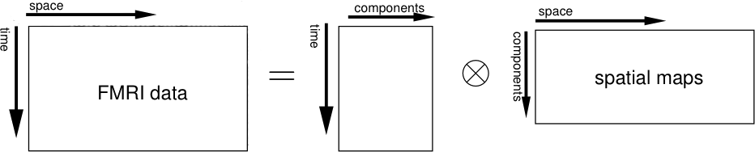
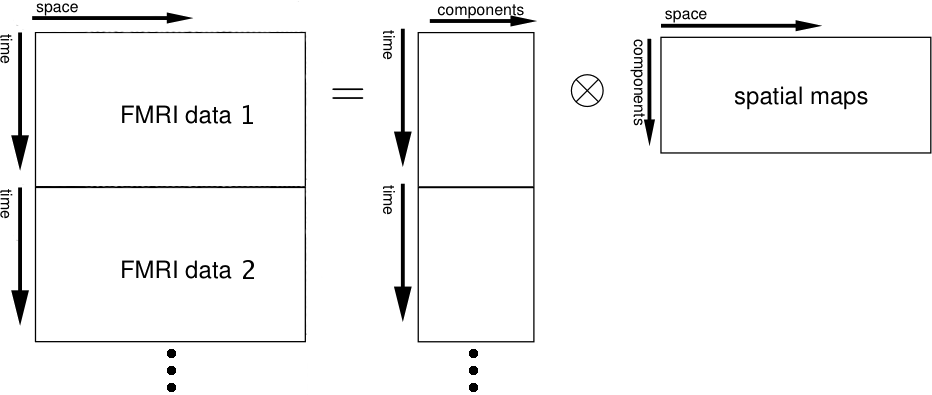

MELODIC v3.0Multivariate Exploratory Linear Optimized Decomposition into Independent Components |
MELODIC 3.0 uses Independent Component Analysis to decompose a single or multiple 4D data sets into different spatial and temporal components. For ICA group analysis, MELODIC uses either Tensorial Independent Component Analysis (TICA, where data is decomposed into spatial maps, time courses and subject/session modes) or a simpler temporal concatenation approach. MELODIC can pick out different activation and artefactual components without any explicit time series model being specified.
For more detail on MELODIC and an updated journal reference, see the MELODIC research web page. If you use MELODIC in your research, please quote the journal reference listed there.
The different MELODIC programs are:
To call the MELODIC GUI, either type Melodic in a terminal (type Melodic_gui on Mac), or run fsl and press the MELODIC button.
Before calling the GUI, you need to prepare each session's data as a 4D NIFTI or Analyze format image; there are utilities in fsl/bin called fslmerge and fslsplit to convert between multiple 3D images and a single 4D (3D+time) image.
Structural images for use as "highres" images in registration should normally be brain-extracted using BET.
Balloon help (the popup help messages in the MELODIC GUI) can be turned off once you are familiar with the GUI.
The Progress watcher button allows you to tell Melodic not to start a web browser to watch the analysis progress. If you are running lots of analyses you probably want to turn this off; you can view the same logging information by looking at the report_log.html or log.txt files in any MELODIC directories instead.
First, set the filename of the 4D input image (e.g. /users/sibelius/origfunc.nii.gz) by pressing Select 4D data. You can select multiple files if you want MELODIC to perform a group analysis or if you want to run separate ICAs with the same setup. Results for each input file will be saved in separate .ica directories, the name of which is based on the input data's filename (unless you enter an Output directory name).
Delete volumes controls the number of initial FMRI volumes to delete before any further processing.
TR controls the time (in seconds) between scanning successive FMRI volumes. Changes here will not affect the analysis and only change the x-axis units of the final time series plots.
The High pass filter cutoff controls the longest temporal period that you will allow.
Low-frequency drifts and motion in the data can adversely affect
the decomposition. In most cases, you would want to motion-correct the
data, remove these drifts first or perform other types of typical data pre-processing before running the analysis. This can be done from within the
Melodic GUI Pre-stats section.
Before any multi-session or multi-subject analyses can be carried out, the different sessions need to be registered to each other. This is made easy within MELODIC which performs registration on input data as part of an analysis using FEAT functionality. Unlike registration step in FEAT this here needs to be performed before the statistical analysis so that the filtered functional data is transformed into the standard space. For information on using multi-stage registration please consult the FEAT manual.
Standard space refers to the standard (reference) image; it should be an image already in standard space, ideally with the non-brain structures already removed.
Resampling resolution (mm) refers to the desired isotropic voxel dimension of the resampled data. In order to save on disk space and on required memory during the analysis it is advisable to resample the filtered data into standard space but keeping the resampled resolution at the FMRI resolution (typically 4mm or 5mm).
The Stats section lets you control some of the options for the decomposition. The default setting will most probably already be set to what you would want most of the time.
By default, MELODIC will variance-normalise timecourses.
By default, Melodic will automatically estimate the number of components from the data - you can switch this option off and then can specify the number of components explicitly.
You can now select the type of analysis. MELODIC currently offers three options:
|  |
|  |
|
Melodic will also by default carry out inference on the estimated maps using a mixture model and an alternative hypothesis testing approach. A threshold level of 0.5 in the case of alternative hypothesis testing means that a voxel 'survives' thresholding as soon as the probability of being in the 'active' class (as modelled by the Gamma densities) exceeds the probability of being in the 'background' noise class. This threshold level assumes that you are placing an equal loss on false-positives and false-negatives. If, however, you consider e.g. false-positives as being twice as bad as false-negatives you should change this value to 0.66...
You can select the background image used for the generation of the spatial map overlay images.
If you select the Output full stats folder option, MELODIC will save thresholded maps and probability maps in a /stats subdirectory within its output folder.
You can specify a temporal design matrix (and in the case of a group analysis also, a session/subject design matrix) as well as corresponding contrast matrices. If these matrices are set in the GUI, MELODIC will perform a post-hoc regression analysis on estimated time courses and session/subject modes. This can be a helpful tool in order to identify whether or not a given component is task related. The matrices themselves can be created easily using the Glm GUI.
When you have finished setting up MELODIC, press Go to run the analysis. Once MELODIC is running, you can either Exit the GUI, or setup further analyses.
The Save and Load buttons enable you to save and load the complete MELODIC setup to and from file.
If you click on the thresholded map, you can inspect the raw IC output together with probability maps and the Mixture Model fit.
In the case of TICA or simple time series concatenation the time course plotted is the rank-1 approximation to all the different time courses that correspond to the given spatial map within the population.
If a temporal design was specified in the Post-Stats section then the time series plot will also contain a plot of the total model fit. In addition, a simple GLM table will describe the fit in detail, providing information of the regression parameter estimates (PEs). Furthermore, MELODIC will perform a simple F-test on the estimated time course and the total model fit. For task-related components the model fit will explain large amounts of the variation contained in the estimated time couse. In addition, if a contrast matrix was specified, the table will also contain Z-statistics and p-values for all the contrasts. If a group analysis was carried out then the report page will also include information on the distribution of the effect size across the population. A simple plot and a boxplot show the relative effect size across the different sessions/subjects. If a design matrix was specified in the GUI setup then MELODIC will also include a GLM regression fit table.
Type melodic --help to get usage.
Running MELODIC can be a useful tool for gaining insight into unexpected artefacts or activation in your data.
As well as being a good way to find structured noise (or unexpected activation) in your data, ICA can also be used to remove chosen components (normally obvious scanner-related or physiological artefacts) from your data in order, for example, in order to improve the FEAT results. In order to do this:
melodic_output_directory.ica/filtered_func_data.ica/report/00index.html)
in a web browser and look through the components to identify those
that you wish to remove; record the list of component numbers to
remove.
cd melodic_output_directory.ica fsl_regfilt -i filtered_func_data -o denoised_data -d filtered_func_data.ica/melodic_mix -f "2,5,9"where you should replace the comma-separated list of component numbers with the list that you previously recorded when viewing the MELODIC report.
denoised_data.nii.gz then contains the filtered and denoised data set which can be used e.g. within FEAT. When running FEAT on this data make sure that the analysis is set to Stats + Post-stats as you do not want to run the other filtering steps (smoothing etc.) again on this data.